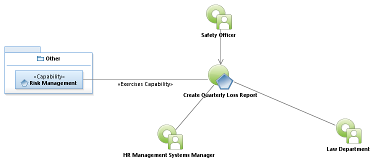
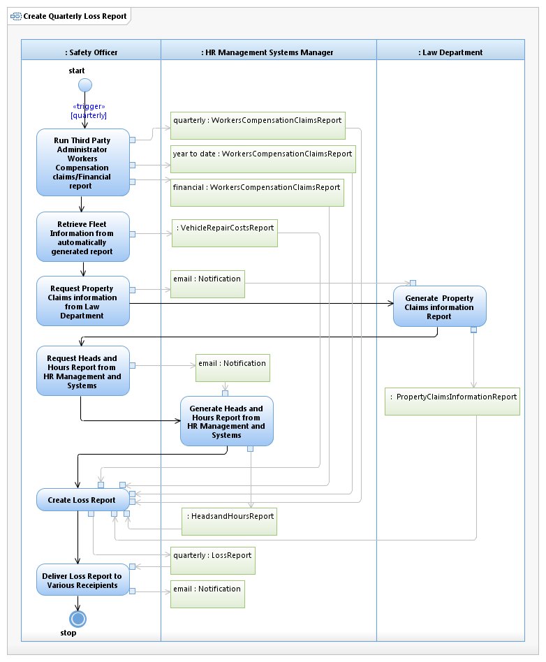

Use Case Model: Create Quarterly Loss Report
Architect: Aaron Brown, IT Enterprise Architect Senior
Date Last Modified: 01/22/2013
User Review: Kieth Land, Linda Lazo
Date: 01/22/2013
Create quarterly loss report indicating quarter and year to date "loss" in terms of workers compensation claims, property claims, and vehicle repair costs. This report is shared with Department directors, city manager and assistance, HR and safety liaisons, AFSCME (American Federation State county municipal employees) and employee safety association members.
Follow link to Role Definitions

Use Case Model: Create Quarterly Loss Report

Activity Model: Create Quarterly Loss Report